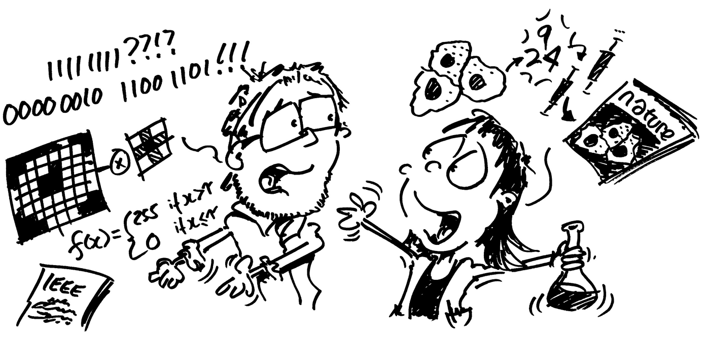

Beyond this book#
Starting out in image analysis can feel a bit like learning a language.
{kind=link}
Initially, everything seems incomprehensible. If you can immerse yourself in the language sufficiently, patterns start to emerge and parts begin to make sense. But even so, speaking it fluently can still feel a long way away.
This book tries to accelerate the process by systematically teaching the basic grammar and core vocabulary of image analysis: the rules, concepts, and tools that (bio)image analysts use every day. It aims to go beyond a superficial overview by describing many of the exceptions, pitfalls and messy realities encountered when working with images: the things I wish I had learned sooner when I started out myself. The things I didn’t know that I needed to know, or didn’t know even existed.
The book also covers a couple of major dialects (ImageJ and Python), in case you want to hang out in areas where they are spoken.
If you’ve worked through the chapters, I hope that they could help you develop a solid basis to understand the language of image analysis. If you want to go further, my advice would be to start using it to communicate with others whenever you can.
The Scientific Community Image Forum at https://forum.image.sc is an extremely active and friendly discussion forum, populated by people who speak image analysis with varying levels of fluency. My own career has been shaped by the things I learned on the forum, and the mailing lists that predated it.
For that reason, I’d suggest participating in in the forum is the best next step. There, you’ll find thousands of discussions on many topics related to scientific imaging in general.
One of the most common uses of image.sc is to ask the community for advice on how to solve a particular image analysis problem. As a result, the forum also contains thousands of searchable discussions that delve into the details of specific problems.
image.sc also acts as the primary discussion channel for more than 50 open-source software projects, listed as ‘Community partners’, including ImageJ, Fiji, CellProfiler, scikit-image and QuPath.
{kind=link}
Fig. 160 Community partners at image.sc in January 2022.
There may well be more by the time you read this.#
It’s possible to learn a lot just by lurking (as I did for years…), absorbing new ideas and ways of thinking from the people who post. But I hope that, in the end, you might actively participate: posting your own questions, and also your own insights, opinions and answers.